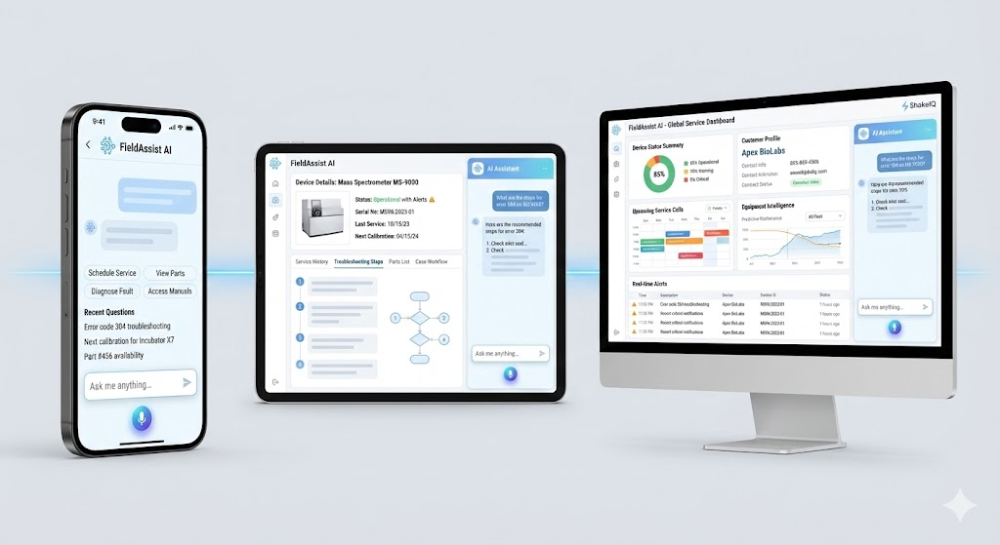

If you lead a field service or support organization in life sciences, the math is not moving in your favor.
Instruments are getting more complex. Customer expectations for uptime keep climbing. Your most experienced engineers are retiring or rotating out — taking decades of accumulated knowledge with them. And the mandate from above is always the same: do more, resolve faster, scale smarter — without adding headcount.
You’ve tried improving documentation. You’ve invested in training programs. You may have even piloted a chatbot or corporate AI tool.
And yet the same problems persist. Resolution times plateau. The same three experts get pulled into every hard case. New technicians take months to become productive. Partner channels operate with outdated information. First-time fix rates hover in the 60-70% range when you need them above 85%.
These aren’t surface-level issues. They’re structural bottlenecks — deeply embedded in how service knowledge is created, stored, accessed, and shared across your organization.
Here are the five we see most often, and what it actually takes to break through each one.
1. Knowledge Is Everywhere — Except Where Technicians Need It
Every life sciences service organization we work with has the same problem: the knowledge exists. It’s just scattered across 10, 20, sometimes 30+ separate repositories — SharePoint folders, file shares, CRM notes, legacy knowledge bases, ticketing systems, and personal notebooks.
Field engineers facing a complex diagnostic situation don’t need more documents. They need the right information, contextualized to their specific instrument, fault condition, and service history — delivered in seconds, not after 30 minutes of manual searching.
The business impact is tangible. Technicians spend a significant portion of every service call just locating relevant information. That’s time on-site that doesn’t produce resolution. It extends mean time to resolution, increases cost per service event, and erodes customer confidence.
What’s needed: A unified knowledge fabric that ingests and structures content from every source — manuals, service logs, CRM notes, known-fix databases, engineering bulletins — and delivers contextually relevant answers to specific diagnostic questions in seconds.
 How fragmented knowledge sources across the service organization connect into an end-to-end intelligence system.
How fragmented knowledge sources across the service organization connect into an end-to-end intelligence system.
2. Every Hard Question Escalates to the Same Three Experts
This is the bottleneck that service leaders feel most acutely — and the one that’s hardest to solve with traditional tools.
In most life sciences service organizations, a small number of senior engineers (often 3-5 people per product line) carry the deep diagnostic expertise that resolves the hardest 30-40% of cases. Everyone else escalates to them. These experts become the de facto knowledge system — answering Slack messages, joining calls, reviewing case notes, and mentoring junior technicians, all while carrying their own caseload.
The result: first-time fix rates stall in the 60-70% range. Escalated cases take hours to days to resolve instead of minutes. And those critical experts burn out, become a single point of failure, or eventually leave — taking irreplaceable institutional knowledge with them.
The business impact compounds over time. Every expert who retires or changes roles creates a knowledge gap that takes years to refill organically. Meanwhile, the organization’s ability to resolve complex issues degrades incrementally — invisible until it shows up in customer satisfaction scores and contract renewal rates.
What’s needed: A system that captures, structures, and operationalizes expert knowledge — so it’s available to every technician at every tier, without requiring the expert to be in the loop. Not a replacement for experts, but a force multiplier that lets their accumulated knowledge scale across the entire organization.
3. Documentation Can’t Keep Up with Equipment Complexity
Modern life sciences instruments are extraordinarily complex systems — analytical platforms with hundreds of subsystems, configurable assay workflows, and multi-variable failure modes that interact in non-obvious ways.
The documentation challenge is structural: technical writers produce manuals and service guides based on engineering specifications, but the real diagnostic knowledge — the patterns that experienced engineers develop over years of field work — rarely makes it into formal documentation. It lives in tribal memory, personal notes, and informal mentoring conversations.
The result is a growing gap between what’s documented and what’s needed. Service manuals may run to a thousand pages but miss the specific diagnostic sequence for an intermittent calibration drift that a veteran engineer would diagnose in minutes. Knowledge bases contain procedures but not the conditional reasoning that tells you which procedure applies to this specific combination of symptoms.
The business impact: Inconsistent service quality across regions, teams, and experience levels. Two technicians facing the same fault condition may reach different conclusions depending on who trained them and what they happen to remember. This inconsistency is especially acute with distributed service partners who lack direct access to internal tribal knowledge.
What’s needed: A knowledge system that goes beyond static documentation — one that understands instruments, fault trees, diagnostic sequences, and service flows at a structural level, and can reason across them to guide technicians through the right diagnostic path for their specific situation.
4. Distributed Partners Operate in an Information Vacuum
Most large life sciences service organizations deliver a significant portion — often the majority — of their field service through authorized channel partners, third-party service providers, and regional distributors. These partners are the face of your brand at the customer site.
Yet the knowledge infrastructure that supports them is almost always a generation behind what internal teams have access to. Partners receive static PDF bundles, periodic training updates, and limited access to internal knowledge bases. There’s no version control, no real-time updates, and no way to ensure that every partner technician is working from the latest diagnostic guidance.
The reasons are understandable: liability concerns, IP protection, and the operational complexity of keeping dozens of partners current across hundreds of product lines. But the result is a two-tier service experience that customers notice — and that shows up in satisfaction and retention metrics.
The business impact is significant. Partner-delivered service events tend to have lower first-time fix rates, higher escalation rates, and longer resolution times compared to internal teams — not because partner technicians are less capable, but because they’re working with less current, less contextualized information. Every point of FTFR gap between internal and partner performance is a measurable cost in repeat visits, customer dissatisfaction, and contract risk.
What’s needed: A governed knowledge delivery layer that gives partners access to the same intelligence as internal teams — while maintaining full control over what’s shared, with whom, and under what conditions. Real-time, version-controlled, role-based access to structured knowledge — not static document packages.
5. Generic AI Doesn’t Work in Regulated Service Environments
By now, most life sciences service organizations have encountered — or been pitched — some form of AI-assisted support. Corporate AI chatbots, general-purpose LLM tools, or vendor-provided “copilots” that promise to help technicians find answers faster.
The results are consistently underwhelming for regulated field service:
- Hallucinations are unacceptable. In regulated environments, a confident-sounding but wrong answer is worse than no answer at all. A technician following fabricated diagnostic guidance can damage a $500,000 instrument, compromise assay integrity, or create a compliance incident.
- No provenance or traceability. When a field engineer acts on AI-generated guidance, there needs to be a clear chain of evidence: where did this information come from? Which document, which version, which paragraph? Generic AI tools can’t provide this.
- No domain grounding. General-purpose models don’t understand the difference between a photometer calibration drift and a reagent dispensing fault. They lack the ontological structure — instrument hierarchies, fault trees, assay workflows, diagnostic sequences — that makes answers actually useful in the field.
- Field teams don’t trust it. After one or two bad answers, technicians stop using the tool entirely. Adoption collapses, and the organization writes off AI-assisted service as “not ready.”
 What separates generic AI responses from governed, evidence-backed answers: structured domain knowledge, provenance, and explainability.
What separates generic AI responses from governed, evidence-backed answers: structured domain knowledge, provenance, and explainability.
The business impact: Failed AI initiatives don’t just waste investment — they create organizational antibodies against future AI adoption. Teams that had a bad experience with a generic chatbot are significantly harder to re-engage, even with a fundamentally different approach.
What’s needed: AI that is purpose-built for regulated service environments — grounded in the organization’s own domain knowledge, delivering evidence-backed answers with full provenance and traceability, and operating entirely within the customer’s security and compliance boundaries.
What a Real Solution Must Deliver
The five bottlenecks above aren’t independent — they reinforce each other. Fragmented knowledge drives escalations. Expert dependency makes documentation gaps worse. Partner information gaps compound inconsistency. And failed AI experiments make the organization skeptical of the one technology category that could actually help.
Breaking through requires a fundamentally different approach — not another chatbot, not another knowledge base, and not a generic LLM with a service skin on top.
A real solution for life sciences field service must be:
- Domain-aware — structured understanding of instruments, fault trees, assay workflows, and diagnostic sequences, not just keyword search over documents
- Evidence-backed — every answer grounded in verifiable source material with full provenance (document, section, version, author)
- Governed and auditable — operating within regulatory and compliance requirements, with decision traces and audit trails
- Deployable in private environments — running in the customer’s own infrastructure with zero data exposure
- Extensible across roles and channels — serving internal technicians, partner engineers, support teams, and training programs from the same knowledge foundation
- Operational in weeks, not months — delivering measurable impact against baseline KPIs within the first 30-60 days
 A governed AI platform delivering consistent intelligence across field technician apps, partner portals, support desks, and training systems.
The Opportunity for Service Leaders
The organizations that solve these five bottlenecks don’t just improve operational metrics — they fundamentally change the competitive dynamics of their service business. Service becomes a growth driver and a differentiation engine, not just a cost center under constant pressure.
Higher first-time fix rates. Faster resolution. Lower escalation costs. Faster technician onboarding. Consistent partner performance. And institutional knowledge that compounds in value over time instead of walking out the door.
Empower AI is purpose-built for this exact challenge. We help life sciences service organizations transform fragmented technical knowledge into a living, governed intelligence system — one that understands your instruments, your workflows, and your domain — delivering trusted, evidence-backed answers to every technician, at every tier, in seconds.
No hallucinations. Full provenance. Private deployment. Live in weeks.
If you’re a service leader navigating these bottlenecks, let’s talk about what a focused pilot looks like — and how fast you can start measuring impact.